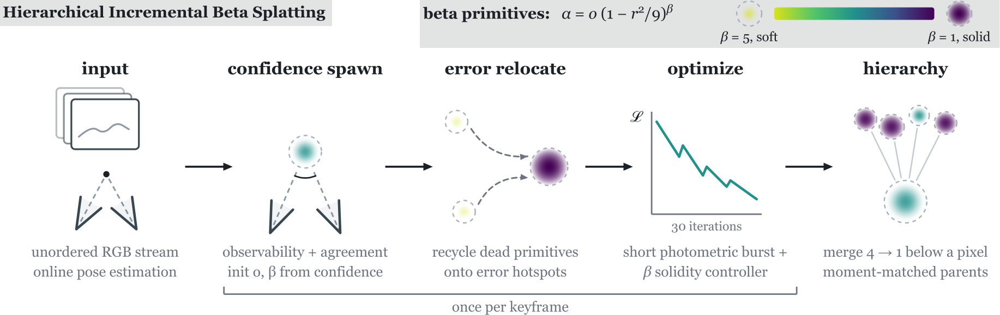
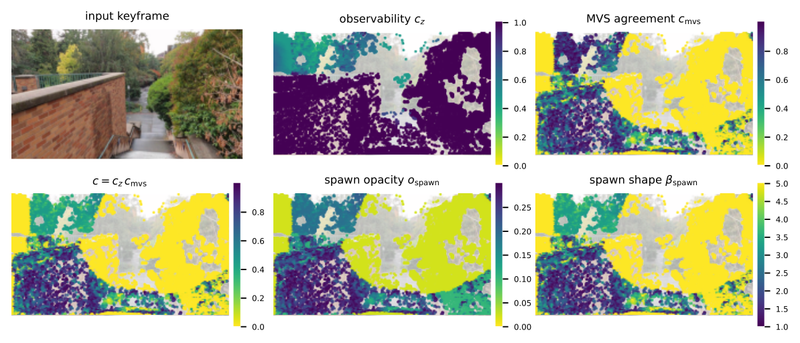
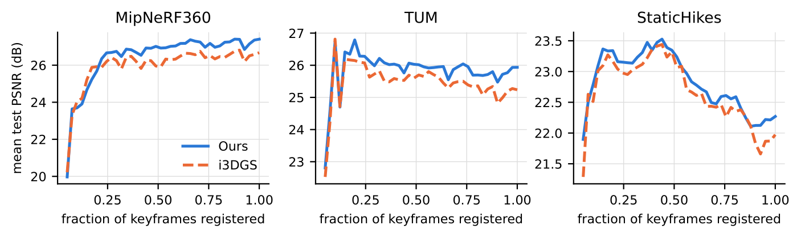

University of Würzburg
Online 3D Gaussian Splatting reconstructs a scene during capture: each keyframe spawns primitives once and refines them for only a few dozen iterations, leaving little chance to fix poor initialization or missing detail. Gaussians are also inherently soft, needing many overlaps for solid surfaces.
We present Hierarchical Incremental Beta Splatting (HIBS), which brings beta kernels to incremental reconstruction. Their shape parameter interpolates between a soft, Gaussian-like profile and a flat-topped, near-opaque surfel, acting as a confidence dial for geometry. Our confidence-aware spawning uses geometric observability and multi-view depth agreement to initialize both opacity and shape, producing solid primitives where geometry is verifiable and soft, correctable primitives where it is not. As online densification, error-driven relocation recycles stale primitives into photometric-error hotspots. Bounded beta kernel support enables exact tile culling and faster rasterization, and a closed-form, shape-preserving merging formulation provides a level-of-detail (LOD) hierarchy for fast optimization and real-time rendering. On Mip-NeRF 360 in the on-the-fly protocol, HIBS improves PSNR by up to 0.8 dB while reducing optimization time by up to 40%.
Each frame is registered by online pose estimation. Each new keyframe then passes through four stages: confidence-aware spawning, error-driven relocation, a 30-iteration optimization burst, and periodic hierarchy merging. All primitives are beta kernels, α = o (1 − r²/9)β, with bounded support and a shape parameter β from soft (β = 5) to solid and flat-topped (β = 1).

New primitives are spawned where the model under-explains image detail. Two geometric cues set their confidence: depth observability cz, from the triangulation angle of the widest covisible baseline, and depth agreement cmvs between guided multi-view stereo and an aligned monocular prior. Confident spawns are solid, uncertain ones soft, so a wrong depth does not block gradients behind it.

Online reconstruction has no time for clone-and-split densification. Instead, every keyframe moves near-dead primitives onto live primitives in the top 10% of the current view's photometric error.
Opacity and scale of the copies are adjusted so the render is unchanged; the following burst separates them.
Each keyframe gets one 30-iteration burst. Bounded support gives exact tile culling, and a fused rasterizer (as in Faster-GS) applies sparse Adam inside the backward pass, so per-primitive gradients are never written to memory.
A lifetime controller hardens primitives that stay accurate across views and softens those with view-inconsistent error, so β tracks confidence over time.
Per-keyframe cost on Garden (track = 480 ms). Fusing the optimizer reduces the burst from 287 to 170 ms. Over the nine otf scenes, beta kernels take 100 s, Gaussians 130 s.
For large captures, groups of four sub-pixel primitives are merged into a parent and the fine levels are moved to host memory. The KL-divergence merge of Gaussian hierarchies does not apply: for bounded kernels, KL is infinite once child mass lies outside the parent.
Beta kernels have closed-form mass, covariance and kurtosis, and kurtosis is invertible in β. Moment matching thus gives the parent's center, extent, opacity and shape in closed form.
Left: the render during online reconstruction. Right: the shape field β as a confidence map. New regions spawn soft and solidify as views accumulate; reflective and poorly observed regions stay soft.
Mean PSNR over the test views registered so far, during reconstruction. HIBS leads i3DGS from shortly after bootstrap to the end, and earlier test views keep improving.

The same novel camera path, rendered from each method's reconstruction of the same input. Ours is on the left. Online: i3DGS and On-the-fly NVS. Offline references: GLOMAP poses with Beta-Splatting or Faster-GS (7K iterations).
Drag to compare. Test views from the paper's comparison figures, with ground truth.
The hierarchy keeps kilometre-scale captures within GPU memory during reconstruction, with inactive levels in host memory. On SmallCity, a driving capture, the active model grows from 0.85 M to 1.32 M primitives at about 10 GB peak GPU memory; HIBS reaches 24.45 dB in under 4 minutes (i3DGS 23.56, offline Octree-GS 24.18 after about an hour).
A long walking capture, reconstructed online in 43 minutes.
Without the moment merge, PSNR drops by 0.67 dB on SmallCity and 2.27 dB on CityWalk, which needs more hierarchy levels. Two further components keep late, low-resolution views from degrading regions that are already well reconstructed:
Ours is averaged over five runs. Times are wall-clock on one RTX 5090, including pose estimation.
| Method | TUM | MipNeRF360 (otf) | StaticHikes | |||||||||
|---|---|---|---|---|---|---|---|---|---|---|---|---|
| PSNR↑ | SSIM↑ | LPIPS↓ | Time↓ | PSNR↑ | SSIM↑ | LPIPS↓ | Time↓ | PSNR↑ | SSIM↑ | LPIPS↓ | Time↓ | |
| GLOMAP + Beta-Splatting (7K) | 22.73 | 0.842 | 0.214 | 1:50 | 27.75 | 0.863 | 0.232 | 4:34 | 20.36 | 0.538 | 0.470 | 59:22 |
| GLOMAP + Faster-GS (7K) | 23.08 | 0.845 | 0.207 | 1:42 | 27.81 | 0.876 | 0.210 | 4:22 | 20.57 | 0.547 | 0.459 | 59:38 |
| MonoGS† | 16.60 | 0.682 | 0.381 | ~15 min | 14.46 | 0.436 | 0.663 | ~4 min | 15.46 | 0.301 | 0.659 | ~9 min |
| S3PO-GS w/ refinement† | 21.88 | 0.777 | 0.309 | ~1 h | 19.82 | 0.553 | 0.576 | ~20 min | 18.09 | 0.368 | 0.611 | ~50 min |
| LongSplat† | 26.51 | 0.875 | 0.176 | ~1.5 h | 23.63 | 0.657 | 0.415 | ~2 h | 20.05 | 0.461 | 0.481 | ~20 h |
| On-the-fly NVS | 23.37 | 0.824 | 0.241 | 1:00 | 22.51 | 0.671 | 0.370 | 1:45 | 21.14 | 0.619 | 0.338 | 2:08 |
| i3DGS | 25.36 | 0.858 | 0.188 | 1:24 | 26.66 | 0.835 | 0.224 | 2:09 | 22.17 | 0.699 | 0.269 | 2:53 |
| HIBS (ours) | 25.94 | 0.868 | 0.175 | 1:44 | 27.47 | 0.852 | 0.204 | 1:18 | 22.49 | 0.710 | 0.259 | 2:02 |
† Numbers from i3DGS, times roughly scaled to our setup. Reduced-resolution and 448×448 protocols (DROID-Splat, CF-3DGS, ARTDECO, AnySplat, DepthAnything3) are under Other protocols.
| Method | MipNeRF360 | Tanks & Temples | Deep Blending | |||||||||
|---|---|---|---|---|---|---|---|---|---|---|---|---|
| PSNR↑ | SSIM↑ | LPIPS↓ | Time↓ | PSNR↑ | SSIM↑ | LPIPS↓ | Time↓ | PSNR↑ | SSIM↑ | LPIPS↓ | Time↓ | |
| GLOMAP exh. + Beta-Splatting (30K) | 28.09 | 0.822 | 0.222 | 12:34 | 22.18 | 0.818 | 0.209 | 11:14 | 30.49 | 0.915 | 0.250 | 10:11 |
| GLOMAP exh. + Faster-GS (30K) | 27.66 | 0.818 | 0.251 | 9:01 | 20.45 | 0.781 | 0.274 | 7:03 | 29.78 | 0.908 | 0.306 | 7:14 |
| GLOMAP exh. + Beta-Splatting (7K) | 25.92 | 0.750 | 0.308 | 6:21 | 19.72 | 0.710 | 0.347 | 5:36 | 26.85 | 0.861 | 0.350 | 4:56 |
| GLOMAP exh. + Faster-GS (7K) | 25.36 | 0.740 | 0.347 | 5:34 | 19.07 | 0.712 | 0.373 | 4:48 | 28.91 | 0.891 | 0.358 | 4:17 |
| GLOMAP seq. + Beta-Splatting (30K) | 25.90 | 0.703 | 0.333 | 9:07 | 23.31 | 0.831 | 0.190 | 8:27 | × | × | × | × |
| GLOMAP seq. + Faster-GS (30K) | 25.53 | 0.702 | 0.356 | 5:29 | 22.17 | 0.802 | 0.250 | 4:21 | × | × | × | × |
| GLOMAP seq. + Beta-Splatting (7K) | 24.05 | 0.656 | 0.396 | 3:17 | 20.81 | 0.733 | 0.321 | 2:55 | × | × | × | × |
| GLOMAP seq. + Faster-GS (7K) | 24.57 | 0.678 | 0.411 | 2:29 | 20.79 | 0.742 | 0.343 | 2:10 | × | × | × | × |
| i3DGS | 24.75 | 0.721 | 0.280 | 1:59 | 22.08 | 0.783 | 0.226 | 1:25 | 27.16 | 0.856 | 0.285 | 2:03 |
| HIBS (ours) | 25.19 | 0.731 | 0.264 | 1:17 | 23.00 | 0.803 | 0.200 | 1:18 | 26.49 | 0.847 | 0.295 | 1:22 |
Offline times include GLOMAP (sequential: 1:52 on MipNeRF360, 1:42 on Tanks & Temples; exhaustive: 4:53, 4:22, 3:42). Test frames that sequential GLOMAP fails to register (bicycle, flowers, stump) are excluded from its averages. With SH instead of spherical-beta colours, ours gains about 0.3 dB on Deep Blending.
| Method | SmallCity | CityWalk | ||||||
|---|---|---|---|---|---|---|---|---|
| PSNR↑ | SSIM↑ | LPIPS↓ | Time↓ | PSNR↑ | SSIM↑ | LPIPS↓ | Time↓ | |
| H3DGS (offline) | 21.17 | 0.679 | 0.285 | ~2.5 h | 11.78 | 0.557 | 0.560 | ~20 h |
| Octree-GS (offline) | 24.18 | 0.831 | 0.273 | ~1 h | 17.33 | 0.638 | 0.520 | ~2.5 h |
| S3PO-GS | 19.71 | 0.652 | 0.462 | ~0.7 h | 10.72 | 0.439 | 0.579 | ~5.5 h |
| On-the-fly NVS | 23.59 | 0.789 | 0.323 | 2:21 | 21.71 | 0.712 | 0.395 | 29:35 |
| i3DGS | 23.56 | 0.800 | 0.302 | 2:54 | 22.03 | 0.772 | 0.336 | 45:20 |
| HIBS (ours) | 24.45 | 0.808 | 0.285 | 3:47 | 25.81 | 0.857 | 0.239 | 42:43 |
Offline times include COLMAP. Image metrics of the baselines are from i3DGS; exact times were measured on our machine. S3PO-GS includes refinement.
| TUM 448×336, others 640 px wide | TUM | MipNeRF360 (otf) | StaticHikes | |||||||||
|---|---|---|---|---|---|---|---|---|---|---|---|---|
| PSNR↑ | SSIM↑ | LPIPS↓ | Time↓ | PSNR↑ | SSIM↑ | LPIPS↓ | Time↓ | PSNR↑ | SSIM↑ | LPIPS↓ | Time↓ | |
| DROID-Splat† | 19.49 | 0.721 | 0.325 | ~5 min | 25.87 | 0.776 | 0.258 | ~9 min | 19.65 | 0.470 | 0.506 | ~8 min |
| CF-3DGS† | 15.05 | 0.578 | 0.405 | ~1 h | 13.52 | 0.295 | 0.621 | ~1 h | 15.21 | 0.301 | 0.560 | ~7 h |
| On-the-fly NVS† | 22.45 | 0.815 | 0.225 | ~50 s | 25.80 | 0.834 | 0.182 | ~40 s | 21.93 | 0.673 | 0.270 | ~1 min |
| ARTDECO | 23.03 | 0.662 | 0.343 | 4:56 | 22.97 | 0.841 | 0.210 | 14:07 | 21.28 | 0.555 | 0.380 | 13:05 |
| i3DGS | 22.51 | 0.836 | 0.189 | 0:58 | 27.16 | 0.849 | 0.165 | 0:43 | 22.24 | 0.683 | 0.297 | 1:04 |
| HIBS (ours) | 25.14 | 0.872 | 0.148 | 1:26 | 27.73 | 0.867 | 0.144 | 0:49 | 22.17 | 0.679 | 0.309 | 1:12 |
At reduced resolution, HIBS stays best on TUM and MipNeRF360; the speed advantage disappears, and on StaticHikes it falls slightly behind i3DGS.
| MipNeRF360 (otf) | PSNR↑ | SSIM↑ | LPIPS↓ | Time↓ |
|---|---|---|---|---|
| AnySplat† | 18.05 | 0.430 | 0.390 | ~20 s |
| AnySplat + refinement† | 21.53 | 0.600 | 0.300 | ~2 min |
| DepthAnything3 (Gaussian head) | 19.88 | 0.487 | 0.338 | 0:17 |
| i3DGS | 26.51 | 0.845 | 0.173 | 0:38 |
| HIBS (ours) | 26.56 | 0.842 | 0.166 | 0:46 |
Feed-forward methods are fast but at least 5 dB lower.
| Scene | Method | ATE %↓ | R.APE °↓ | T.RPE %↓ | R.RPE °↓ |
|---|---|---|---|---|---|
| fr1/desk | Ours | 0.55 | 1.90 | 0.344 | 0.644 |
| i3DGS | 0.47 | 1.42 | 0.314 | 0.548 | |
| fr2/xyz | Ours | 0.33 | 0.41 | 0.178 | 0.128 |
| i3DGS | 0.37 | 0.42 | 0.185 | 0.133 | |
| fr3/office | Ours | 0.32 | 0.94 | 0.127 | 0.326 |
| i3DGS | 0.38 | 1.02 | 0.150 | 0.347 |
Against COLMAP pseudo ground truth. fr1/desk has motion blur and little early parallax; a wider bootstrap pool reduces its ATE to 0.51% at 1.1 s extra latency.
| Leave-one-out (9 otf scenes) | PSNR↑ | SSIM↑ | LPIPS↓ | Time |
|---|---|---|---|---|
| Full (ours) | 25.30 | 0.810 | 0.213 | 101 s |
| w/o spherical-beta lobes (→ SH) | 25.12 | 0.807 | 0.214 | 106 s |
| DBS lobe-init prior | 25.19 | 0.809 | 0.214 | 100 s |
| w/o confidence spawning | 25.14 | 0.808 | 0.215 | 99 s |
| w/o solidification | 25.15 | 0.807 | 0.216 | 100 s |
| w/o error relocation | 25.09 | 0.804 | 0.219 | 95 s |
| w/o regularizers | 24.98 | 0.803 | 0.216 | 108 s |
| w/o fused rasterizer | 25.24 | 0.809 | 0.214 | 120 s |
| Kernel (9 otf scenes) | PSNR↑ | SSIM↑ | LPIPS↓ | Time |
|---|---|---|---|---|
| i3DGS (no confidence) | 24.73 | 0.797 | 0.227 | 129 s |
| Gaussian + ospawn | 25.09 | 0.808 | 0.214 | 130 s |
| β frozen at 4 + ospawn | 25.06 | 0.806 | 0.217 | 100 s |
| learnable β + ospawn | 25.11 | 0.807 | 0.215 | 100 s |
| + βspawn | 25.15 | 0.807 | 0.216 | 100 s |
| + solidification (full) | 25.30 | 0.810 | 0.213 | 101 s |
Removing any component lowers quality. The fused rasterizer saves 16% runtime; beta kernels are about 23% faster than Gaussians at equal or better quality.
@inproceedings{franke2027hibs,
title = {Hierarchical Incremental Beta Splatting for Online Reconstruction},
author = {Franke, Linus},
booktitle = {Proceedings of the IEEE/CVF Winter Conference on Applications of Computer Vision (WACV)},
year = {2027}
}